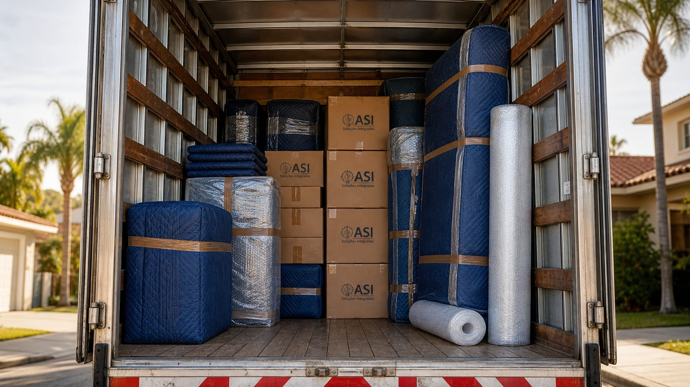

Fretes e cargas com agenda confirmada.
Petrolina · Juazeiro · Vale do São Francisco.
Itens grandes, cargas pontuais e transporte sob agenda — decisão clara entre confirmar, ajustar ou orientar o melhor caminho.

“Excelente serviço de frete. A equipe foi extremamente cuidadosa com cada móvel na minha mudança para um edifício e demonstrou um grande compromisso.”
Caio PeixotoFrete · mudança para edifício · Avaliação 5 estrelas no Google
Volume informado, acesso combinado, sem surpresa.
- Volume estimado em itens grandes ou métricos aproximados
- Acesso e altura do baú combinados antes do dia
- Amarração e fixação de tudo que vai junto
- Mantas em itens grandes, plástico bolha em frágeis
- Tempo de carregamento e descarga estimado e combinado
- Equipe própria ASI — não terceirizamos sem aviso
- Combinado de pagamento e nota fiscal antes da saída
Antes de mandar mensagem, talvez ajude.
Atendem cargas avulsas (1 móvel grande, 1 caixa só)?
Sim, conforme rota e agenda. Itens avulsos comuns: geladeira, sofá, cama box, mesa de jantar, máquina industrial.
Qual a distância máxima?
Local na região de Petrolina e Juazeiro até interestadual sob agenda. Cada rota é avaliada por volume e janela de carga.
Aceitam carga compartilhada?
Em alguns casos, conforme rota e tipo dos itens. Vale enviar volume e descrição — o Sr. Alexandre avalia se encaixa.
Tempo de resposta para urgência?
Hoje ou amanhã quando a agenda permite. Para frete urgente, vale ligar direto: (87) 98170-3225.
Aceitam empresa para frete recorrente?
Sim. Empresas com volume regular têm condição comercial caso a caso, com nota fiscal e prazos combinados.
Pedido incompleto não vira orçamento errado.
Quando a demanda não encaixa na agenda, Alexandre avalia os dados e orienta o próximo passo — sem improviso.
Falar agora
O que vai, de onde sai, pra onde vai e quando precisa — em 4 perguntas você está pronto.
Mandar fotos pelo WhatsAppResponder 4 perguntas